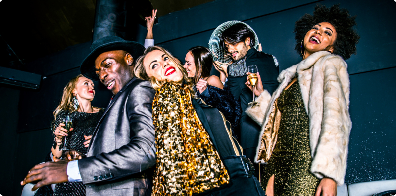
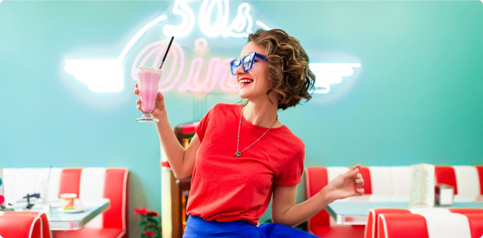

The Intersection of Fashion and Event Photography:
A Visual Feast
Fashion and event photography are two worlds that seem to exist separately from each other. However, when these two arts meet, something magical happens. This encounter of two aesthetics creates a visual feast, filling events with style, elegance, and sophistication. Let's dive into a world where fashion and event photography come together to create visual delight.
The Art of Visualization
Event photography is not just about capturing moments. It is the art of visualization, which requires not only technical mastery but also artistic vision. When photographers encounter events, they see more than just a scene - they see stories, emotions, and style. In this context, fashion becomes a tool for creating visual narratives, adding refinement and elegance to every frame.
Aesthetics and Style
Fashion has always been associated with aesthetics and style, and this is reflected in event photography. From elegant evening dresses to stylish suits, fashion plays a key role in creating the atmosphere and image of an event. Photographers who can capture and interpret this style can turn an ordinary event into a visual celebration.
Creating Illusion
Event photography also often plays a role in creating illusion. It allows us to glimpse into a world where every moment seems perfect and flawless. Fashion enhances this illusion by adding beauty and glamour to every shot. Together, they create a magical world where reality merges with fantasy, and each event becomes part of this amazing fairy tale.
Inspiration and Creativity
The meeting of fashion and event photography also stimulates the creative process. It inspires photographers to experiment with new ideas, styles, and concepts to create something truly unique. Fashion is a source of endless inspiration that allows photographers to unleash their creative potential and create works of art that inspire and amaze.
The intersection of fashion and event photography is not just the merging of two different worlds; it is the creation of a visual celebration that captures the imagination and inspires. It is an art that allows us to see the world from a new perspective, where every event becomes part of an amazing story of style and elegance.